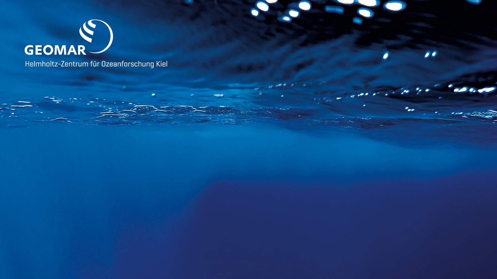

Large-Scale Atlantic Overview
Basin-scale conditions along the RV Meteor M219 WAVES cruise corridor from Recife to Cape Verde and Emden.
Regional Zoom Panels
Focused views for the Recife → K1-K4 mooring region and the Equator → CVOO → Mindelo corridor.
In-situ Observations
Planned integration of Argo floats, NOAA GDP drifters, ship position, moorings, and underway observations.
Planned route: Recife → K1-K4 moorings → Equator/CVOO → Mindelo → Emden.
Argo and drifter overlays pending implementation.
Product Availability
Rows are selectable layers; columns show the rolling temporal map window.
Datasets Used
Dataset IDs are configured for Copernicus Marine Toolbox and CDS API access through GitHub Actions.

Dashboard for the GEOMAR Physical Oceanography cruise context.